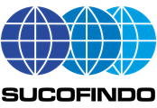

Four Natural Minerals, Lab-Tested & Documented
Key benefits, sector applications, and certificates of analysis for every mineral line we produce — in powder and granule form.


Dolomite
Available in powder (60–325 mesh), granule (2–5 mm), and chip (3–10 mm) form, for construction, steel, glass, water treatment, and agriculture needs.
Key Benefits
- Raises Soil & Water pH
Gradually neutralizes acidic soil and pond water — gentler than quicklime.
- Stabilizes Water Alkalinity
Keeps water buffered so daily pH doesn't swing sharply in ponds.
- Calcium & Magnesium Source
Ca strengthens plant tissue; Mg is the core of chlorophyll — greener leaves, better photosynthesis.
- Improves Soil Structure
Looser soil, active microbes, and more efficient NPK uptake.
- Steel Flux & Construction Material
Binds impurities into slag in furnaces and serves as cement filler and aggregate.
- Glass & Ceramics Raw Material
A CaO & MgO source that makes glass more chemically durable and less prone to clouding.
COA (Certificate of Analysis)
Dolomite Powder · Report No. E13103/FOBOAT · Sep 18, 2026
- CaO
- 31.74%
- MgO
- 22.30%
- Neutralizing value (as CaCO₃)
- 103.26%
- Moisture
- 0.55%
Results apply to the dolomite powder sample tested by the Sucofindo laboratory (ID Survey group). Every batch/shipment is accompanied by its own COA.

Natural Phosphate (Guano Phosphate)
A natural source of Phosphorus (P) from Indonesian guano deposits, serving as an alternative to imported phosphate as a raw material for SP-36/NPK fertilizers or for direct application on acidic soils. Available in powder (60–325 mesh) and granule (2–5 mm) form.
Key Benefits
- Strong, Wide Roots
Phosphorus (P) drives root growth so plants stand firmer and take up more nutrients.
- Uniform Flowering & Fruiting
Supports flower, fruit, and seed formation — for a bigger harvest.
- Slow Release, Fewer Applications
Nutrients release gradually with a residual effect lasting several seasons.
- Effective on Acidic & Peat Soils
The more acidic the soil, the more readily rock phosphate dissolves for plants.
- Animal Feed Mineral
P & Ca for strong bones, optimal growth, and thicker eggshells.
- Chemical Industry Feedstock
Processed into phosphoric acid and phosphate compounds for many industries.

Natural Potassium (Palm Bunch Ash)
A natural Potassium (K) source made from empty oil palm fruit bunch ash, serving as a partial replacement for KCl and a neutralizer for acidic plantation soils. Available in powder (60–325 mesh) and granule (2–5 mm) form.
Key Benefits
- High Potassium, Heavier Fruit
Potassium (K) improves fruit filling, bunch weight, and oil yield.
- Drought & Disease Resilience
K regulates stomata and strengthens plant cell walls.
- Alkaline, Raises pH
Helps neutralize acidic soil while fertilizing at the same time.
- Rich in Secondary & Micronutrients
Contains Ca, Mg, and silica that further enrich the soil.
- Eco-Friendly & Circular
Recycled from palm empty fruit bunches — a natural alternative to KCl.
- Green Concrete Potential
Reactive silica with pozzolanic properties for partial cement replacement.
COA (Certificate of Analysis)
Natural Potassium (Palm Bunch Ash) Granule · Report No. E13102/FOBOAT · Sep 18, 2026
- K₂O (dry basis)
- 37.36%
- Moisture
- 4.37%
Results apply to the palm bunch ash granule sample tested by the Sucofindo laboratory (ID Survey group). Every batch/shipment is accompanied by its own COA.

Clay
A clay mineral with high binding strength, used as a binder for animal feed pellets and granular fertilizers, as well as in drilling mud. Available in powder form (60–325 mesh).
Key Benefits
- High Plasticity
Easily shaped into ceramics, bricks, and roof tiles before firing.
- Strong & Heat-Resistant When Fired
Produces hard, dense, weather-resistant products.
- Foundry Sand Binder
Bonding clay keeps metal-casting molds precise and firm.
- Drilling Mud Additive
Controls mud viscosity and supports the borehole wall.
- Filler for Paint, Paper & Rubber
Adds opacity and surface smoothness while lowering material cost.
- High Binding & Water Retention
Helps sandy soil hold water and nutrients longer.
COA (Certificate of Analysis)
Clay Powder · Report No. M07767/EOBOAT · Sep 11, 2026
- SiO₂
- 51.00%
- Al₂O₃
- 20.72%
- Fe₂O₃
- 5.59%
- Moisture
- 5.98%
Results apply to the clay powder sample tested by the Sucofindo laboratory (ID Survey group). Every batch/shipment is accompanied by its own COA.
Get the Best Offer for Your Industrial and Land Needs
Our team is ready to help determine the right product and dosage — fast response, competitive pricing.